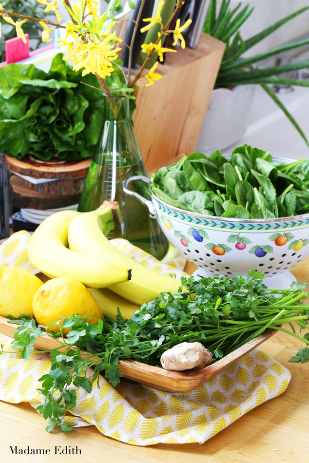
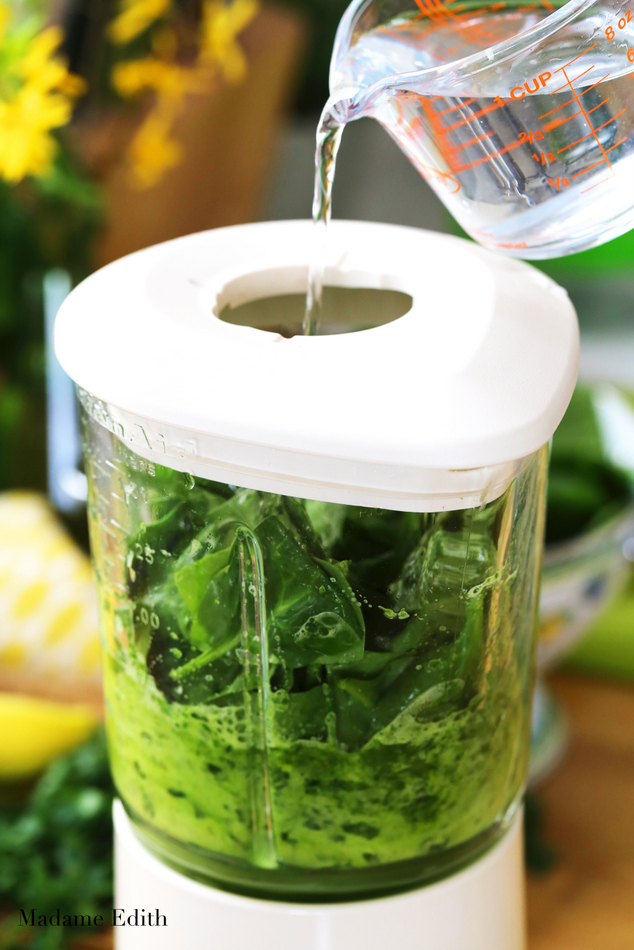
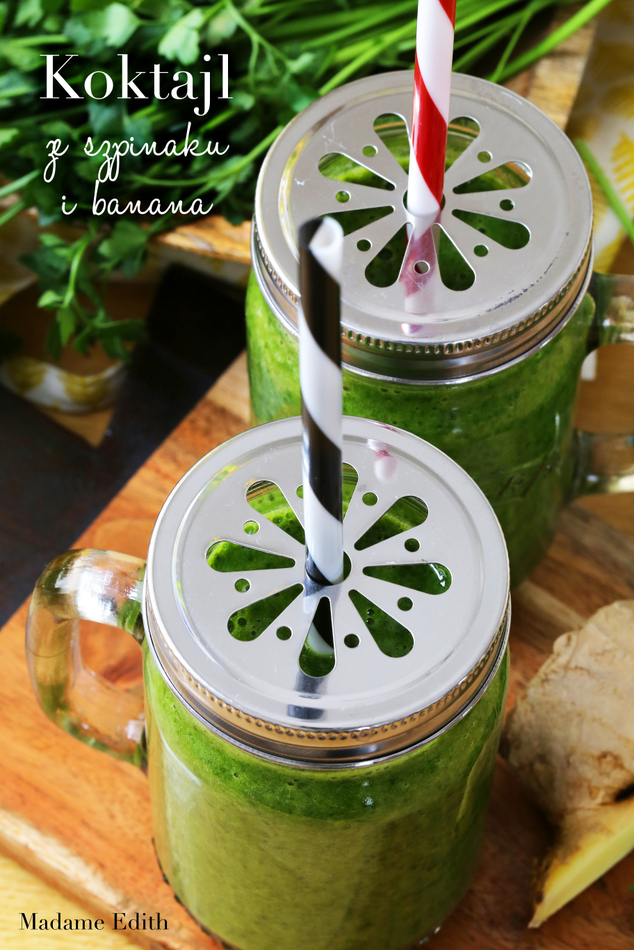

Koktajl ze szpinaku i banana
Koktajl ze szpinaku i banana to moje wiosenne odkrycie. Wygląda podobnie do koktajlu z jarmużem, ale smakuje zupełnie inaczej. Jest bardziej słodki i można go pić dosłowni litrami. Na wiosenne oczyszczenie będzie jak znalazł, dostarczy też dużo witamin i mikroelementów, których w tej porze roku, zaraz po długiej zimie, zwykle nam brakuje. Zrobicie go w 5 minut, a jeśli zostanie Wam na kolejny dzień, to bez problemu przechowacie go w lodówce, a przed wypiciem wystarczy go lekko przemieszać. Na zdrowie!
Koktajl ze szpinaku i banana – składniki:
- 2 banany
- 2 garście umytego szpinaku
- 2 łyżki posiekanej natki pietruszki
- 1-2 plasterki imbiru
- sok z 1 cytryny
- woda dla rozrzedzenia konsystencji

Koktajl ze szpinaku i banana – przepis:
Wszystkie składniki (poza wodą) wkładamy do blendera. Dolewamy sok z cytryny. Miksujemy.
Na samym końcu dolewamy stopniowo wodę, by uzyskać rzadszą konsystencję. Jej ilość zależy od Waszych preferencji – jeśli lubicie rzadsze koktajle dojecie 1-2 szklanki, jeśli bardzo gęste – mniej niż 1 szklankę.

Koktajl rozlewamy do szklanek. Z podanych składników uzyskałam 2 porcje.

Koktajl ze szpinaku i banana – podanie:
Koktajl najlepiej smakuje od razu po przygotowaniu. Możecie zmieniać proporcje składników i dodać np. więcej soku z cytryny lub pominąć imbir jeśli za nim nie przepadacie.
Smacznego!
E.


W sesji wystąpiły:
słoiki z uchem marki Kilner (w komplecie wraz z przykrywką i słomkami) – dostałam je w prezencie od mojej przyjaciółki mieszkającej w Danii
ścierka, drewniana deska i miska na owoce/warzywa – H&M Home
durszlak – Villeroy & Boch
Podobne wpisy
Komentarze
8 odpowiedzi na “Koktajl ze szpinaku i banana”
Koktajl ze szpinaku i banana
Koktajl ze szpinaku i banana
Czas przygotwania:
![Dziś na blogu przepis na chleb pszenno-żytni, który jest jeszcze smaczniejszy od czystopszennego, który pokazywałam Wam niedawno. Do swojego dorzuciłam oliwki, ale Wy nie musicie ich dodawać, jeśli nie lubicie 😉 Link na Stories i w bio.
I a propos pieczywa, to dziś rano popsuł się nasz toster @kitchenaid_polska , który kupiliśmy na @westwingpl podczas listopadowej kampanii świątecznej. Jestem mega zawiedziona i dziś wysyłam go do naprawy. Będę Was informować jak zakończy się ta sprawa.
Po 4-krotne wymianie czajnika (mamy obecnie już piąty) bardzo się zraziłam do tej marki. Toster kupiliśmy po 2 wymiarach czajnika, dwie kolejne miały miejsce już w styczniu, więc wtedy jeszcze mieliśmy nadzieję. O ile mikser Artisan służy mi od kilkunastu lat i tylko raz był serwisowany, to inne sprzęty pozostawiają niestety jak widać dużo do życzenia. A wielka szkoda, bo marka ma piękny design oraz super funkcjonalne rozwiązania. Szkoda, że jakość produkowanych w Chinach sprzętów nie idzie z tym w parze.
Wiem, że i wielu z Was miało sporo problemów z tą marką. Jedyny plus, że serwis szybko naprawia lub wymienia na nowy egzemplarz.
W każdym razie na blogu świeży chleb, którego nie trzeba odpiekać w tosterze, bo długo zachowuje świeżość 😉
Dobrego dnia!
#chleb #madameedith #handsinframe #pracowniawypiekow #chlebnadrożdżach #chlebpszenny #domowewypieki #domowapiekarnia #homemadebread #dzieńdobrybardzo #dziendobry #pieczywo #domowepieczywo #breadsofinstagram #breadmaking #breadporn #breadbaking #breadlove #bread🍞 #breadlover](95538749_161105788710673_2154284778352442282_nlow.jpg)
![Dzień dobry! Który kubek wybieracie? ☕
::
Dziś na blogu znajdziecie wpis o naczyniach kuchennych dla maluchów. Pokazuję Wam talerze, sztućce, miski i kubki Małego Monsieur. Tak dla odmiany, bo jego rzeczy nieco wygryzły moje i musiałam zrobić dla nich specjalne miejsce 😂
::
Często jest tak, że nie zacznie posiłku dopóki nie dam mu jego ulubionego widelca lub łyżki. Taki mały, a już ma własne zdanie i otwarcie demonstruje swoje opinie. Co będzie dalej?😱
::
::
#shelfie #kubek #filiżanka #ceramika #mojakuchnia #porcelana #kubki #coffeemug #teamug #bialewnetrze #bialakuchnia #madameedith #kitcheninterior #kitchenshelves #mamąbyć #naczynia #naczyniadladzieci #ezpz #lassig #villeroyboch #coffeedesk #endeceramics](95665226_931435590650810_611984734196816435_nlow.jpg)
![Ogórki małosolne - pierwsze w tym roku 💓 Lubicie? Robicie? ::
Ja od lat mam jeden garnek kamionkowy. Zimą robię w nim zakwas z buraków, wiosną zakwas na barszcz lub żurek, a potem już tylko małosolne aż do końca lata. ::
Żeby było lepiej, to powiem Wam, że na obiad będzie dziś botwina 👍
::
::
#ogorkimalosolne #ogorki #ogórki #botwina #mojakuchnia #mojegotowanie #zdroweprzepisy #zdrowejestczadowe #zielonejedzenie #zielonomi #urbanjungleblog #urbanjungleblogger #zdrowystylzycia #botwinka #nowalijki](95392889_2362052357428318_6740680561008681820_nlow.jpg)
![Biszkopcik skończył już 3 miesiące!🎊 Dziś obudził mnie o 4:40 z takim szerokim uśmiechem, że od razu wybaczyłam mu tę nieludzką porę kolejnej pobudki.
Staje się coraz bardziej kontaktowy i widzę, że będzie bardzo pogodnym dzieckiem, zupełnie jak jego starszy brat, który nazywany jest przez nas czule "Tornado" - śmieje się, biegnie dalej i tylko psoci 🤣
Gdyby nie dzieciaki dużo trudniej byłoby mi znieść tę obecną sytuację. Można powiedzieć, że są lekiem na całe zło i zastrzykiem pozytywnej energii.
Mały Monsieur powiedział nawet w sobotę, że "kocha brata", więc już w ogóle jest super. Na początku był trochę zazdrosny o bobasa, ale już mu na szczęście przeszło i się do niego przyzwyczaił.
Pięknego dnia dla Was! 💓
P.S. Z bujnej czupryny Biszkopta został tylko mały fragment nad samym karkiem. Na szczęście ma już ponad 1-centymetrowe włosy na większej części głowy...z wyjątkiem tego wytartego placka na potylicy 😉
#biszkopcik #mamaisyn #mamabyc #niemowlak #3miesiące #włosy #mojakuchnia #mommylife #mamaidziecko #mommyandsontime #mommyandson #mommyandsongoals](95566427_239858130431209_8172490545702229434_nlow.jpg)
![Huevos rancheros - najsmaczniejsze meksykańskie jajka i świetny pomysł na proste śniadanie. ::
Nowy przepis już na blogu! Link w bio i na Stories. ::
Na Stories wrzucam Wam też linka do mojej nowej grupy na Facebooku, na której rozmawiamy o gotowaniu, kuchennych sprzętach, wystroju itp.
::
Miłego dnia!
::
::
#huevosrancheros #jajka #eggsfordays #eggsforbreakfast #mexicanbreakfast #śniadanie #niedziela #niedzielneśniadanie #awokado #kolendra #pomidory #kawa #kawusia☕ #kawusia #śniadaniemistrzów #breakfastgoals #breakfaststories #breakfastlover #szakszuka](95500840_653108165238918_3917860729882508455_nlow.jpg)
![Dziś na śniadsnie domowy chleb, domowa konfitura, domowy sernik i domowa pasta z tuńczyka ze znakiem MSC plus oczywiście lubelskie cebularze. Jemy śniadanie z tuńczykiem bonito - ulubioną poduszką Małego Monsieur, bo dziś Międzynarodowy Dzień Tuńczyka 🐟
::
Nie wiem czy wiecie, ale popularność tej ryby rośnie - ilość poławianego tuńczyka wzrosła z niecałych 0,6 mln ton w 1950 r. do blisko 6 mln ton obecnie. Ogromny popyt na te ryby powoduje rosnącą presję na środowisko. Ofiarami zintensyfikowanych połowów tuńczyka stają się także inne zwierzęta, które przypadkowo wplątują się w sieci rybackie. ::
Dlatego tak ważny jest wybór tuńczyka (i innych ryb) z certyfikatem zrównoważonego rybołówstwa MSC. Odpowiedzialni rybacy stosują odpowiednie narzędzia połowowe, które minimalizują przyłów, a także wprowadzają mechanizmy pozwalające na bezpieczne uwolnienie przypadkowo złowionych zwierząt, (np. specjalnie zatrudnieni nurkowie, uwalniają delfiny z sieci). Certyfikowane rybołówstwa tuńczyka muszą wykazać, że ich połowy prowadzone są tak, by zasoby ryb pozostawały na stabilnym poziomie, a wpływ na ekosystem morski był zminimalizowany.
::
Na szczęście coraz więcej rybołówstw podejmuje to wyzwanie. Obecnie już blisko 28% światowych połowów tuńczyka posiada certyfikat MSC. To dwa razy więcej niż jeszcze w 2014 r. Wciąż jednak za mało, by zapewnić, że pysznym tuńczykiem będą mogły cieszyć się także przyszłe pokolenia. Potrzebne są dalsze pozytywne zmiany, a wpływ na nie ma każdy z nas. ::
Rosnący popyt na produkty pochodzące ze zrównoważonych połowów, to jasny sygnał dla całej branży rybnej. Wybierajcie świadomie i sięgajcie po produkty z certyfikatem MSC 🐟
::
::
#msc #wybierajmsc #worldtunaday #tunaday #tunaspread #tuńczyk #bonito #śniadanie #śniadaniemistrzów #dzieńdobry #dziendobrybardzo #kawa #kawusia #chleb #domowewypieki #sernik #zebracheesecake #chocolatecheesecake #domowapiekarnia #onthetableproject #breakfastgoals #breakfaststories #breakfastlover #śniadanko #cebularz #cebularze #edithcookbook](95216525_926380847802949_1334575988149337535_nlow.jpg)
Ostatnio w mojej ulubionej knajpce wegetariańskiej piłam koktajl ze szpinaku, banana, nasion chia, ananasa i wody aloesowej. Coś wspaniałego! Dlatego czuję, że Twój bardzo by mi smakował.
Dlatego czuję, że Twój bardzo by mi smakował. 
Vela, Monsieur toleruje je właśnie tylko w postaci zmiksowanej lub w całości jako dodatek do ciast. Chia to znakomity zagęstnik do koktajli i można je w taki sposób „przemycić”
Monsieur toleruje je właśnie tylko w postaci zmiksowanej lub w całości jako dodatek do ciast. Chia to znakomity zagęstnik do koktajli i można je w taki sposób „przemycić” 
nasiona chia są genialne w koktajlach! Podpowiedziałaś mi właśnie, by je koniecznie dodać następnym razem do takiej mieszanki
Serdeczne pozdrowienia!
E.
Bardzo lubię takie koktajle, ale musi mnie najść – a na co dzień wolę jeść owoce w całości, choć takie koktajle to świetny sposób na zjedzenie jarmużu czy szpinaku na surowo Moja siostra z kolei pije takie prawie codziennie – jej zazwyczaj składa się z 2 bananów, 2 garści szpinaku, jabłka, kiwi i łyżeczki młodego jęczmienia, cytryna i imbir jej nie pasuje (imbir mi także nie).
Moja siostra z kolei pije takie prawie codziennie – jej zazwyczaj składa się z 2 bananów, 2 garści szpinaku, jabłka, kiwi i łyżeczki młodego jęczmienia, cytryna i imbir jej nie pasuje (imbir mi także nie).
Twój wygląda wyjątkowo pysznie
Aniu,
super pomysł z młodym jęczmieniem. Mam akurat torebkę w domu, ale jeszcze jej nie otworzyłam, bo nie wiedziałam za bardzo do czego mogę go dodać (dużo osób dodaje do jogurtu, ale mnie ten pomysł średnio się podoba…) – teraz już wiem. Dziękuję!
Moc pozdrowień!
E.
Młody jęczmień w jogurcie i mi by się nie podobał Moja siostra czasem miesza go jeszcze z wodą i pije taki „eliksir”, ale jak dla mnie to on smakuje rybą
Moja siostra czasem miesza go jeszcze z wodą i pije taki „eliksir”, ale jak dla mnie to on smakuje rybą 
Przepis na pewno wyprobuje Mam nadzieje ze blender zyrafa da rade. Przymierzam sie do zakupu blendera kielichowego. Mozesz powiedziec jakiego uzywasz i na co zwrocic uwage przy zakupie? Jaka powinna byc np moc?
Mam nadzieje ze blender zyrafa da rade. Przymierzam sie do zakupu blendera kielichowego. Mozesz powiedziec jakiego uzywasz i na co zwrocic uwage przy zakupie? Jaka powinna byc np moc?
Pati,
Używam blendera KitchenAid z serii Artisan, ale jakoś niespecjalnie go polecam. Tzn. rozdrobni wszystko, nawet lód, ale bardzo trudno się go myje i niestety przy rzadkich koktajlach potrafi przeciekać (wg mnie to wada konstrukcyjna, bo na warsztatach w studiu kulinarnym w tym samym modelu występował identyczny problem). Moc wg mnie nie jest najważniejsza – mój ma relatywnie słabą, ale daje radę ze wszystkim – gdyby tylko nie dwa powyższe problemy, to byłabym z niego bardzo zadowolona.
Serdecznie pozdrawiam
E.
Bardzo dobry koktail. Zrobilam wczoraj na kolacje. I choć nie byłam przekonana i nieufna co wyjdzie z połaczenia tych smaków, to wypilismy wszyscy, łącznie z 3 latkiem, który się też przemógł